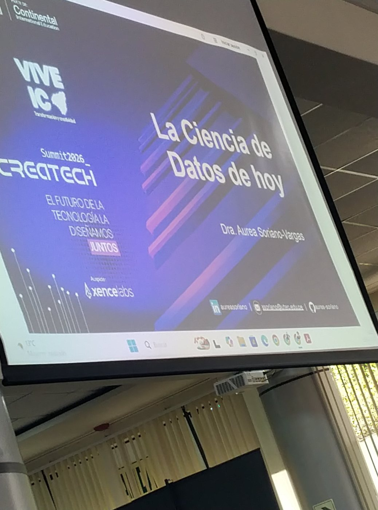
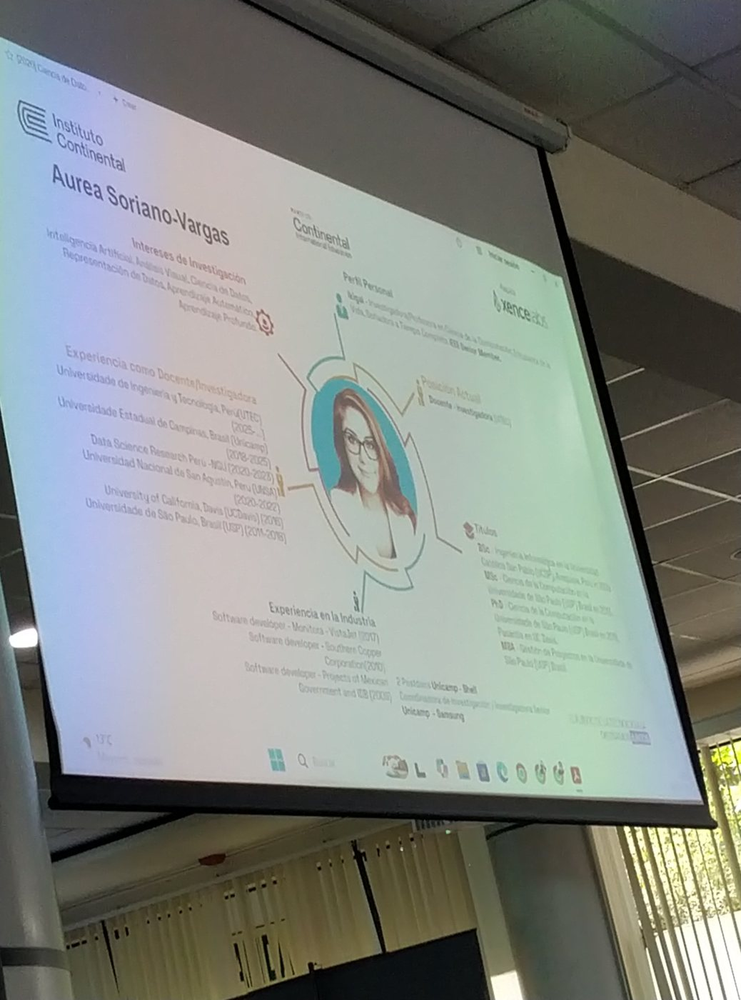
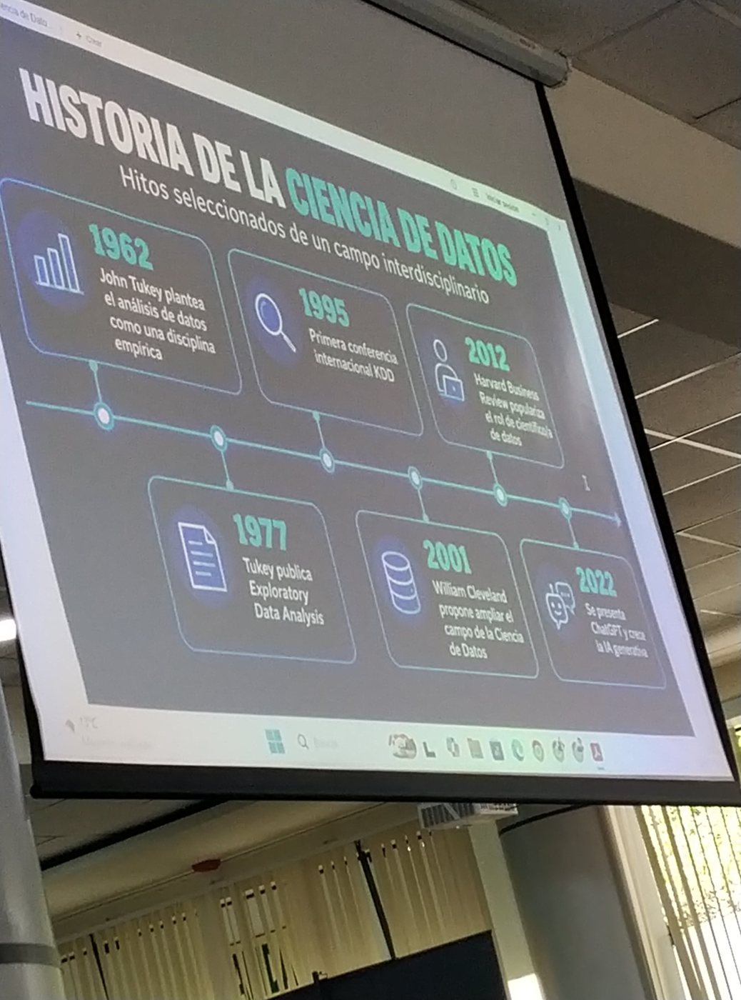
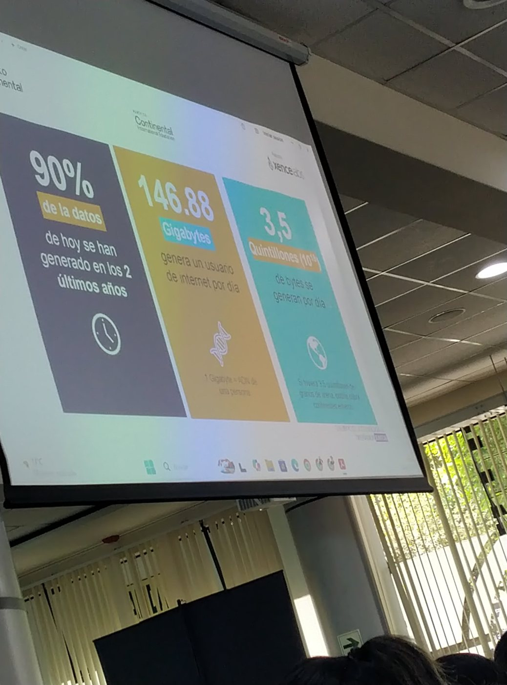
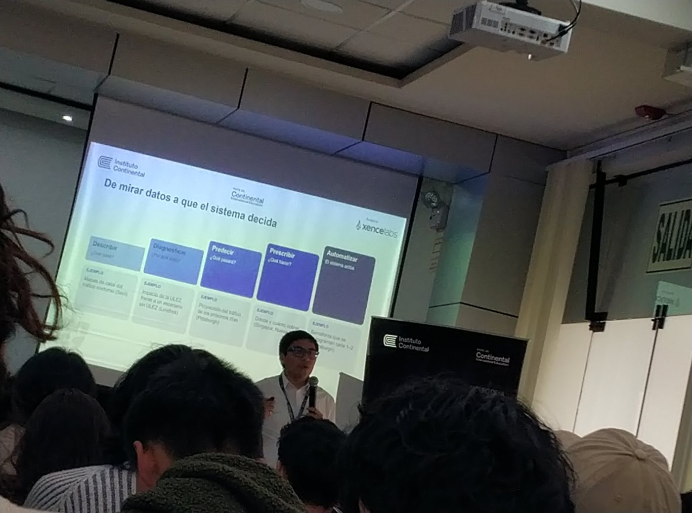
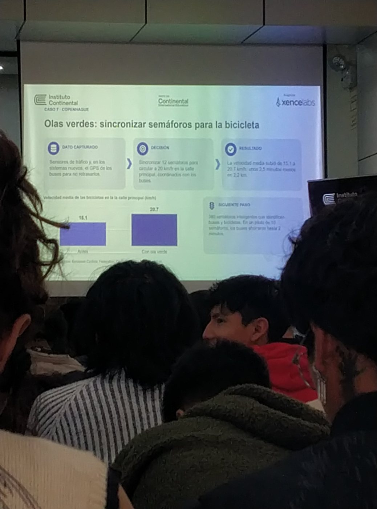

Bordados personalizados y diseños textiles listos
Bordados Wanka S.A.C. es una empresa dedicada a la fabricación y comercialización de todo tipo de bordados personalizados y diseños textiles listos, para clientes particulares, empresas, instituciones educativas y organizaciones. Atendemos pedidos al por mayor y al por menor, en pequeñas y grandes cantidades.
Misión: brindar servicios de bordado personalizado y diseños textiles listos de alta calidad, con productos duraderos y bien hechos, trabajando con compromiso y responsabilidad para garantizar la satisfacción de nuestros clientes.
Visión: ser una empresa grande y reconocida a nivel nacional e internacional en bordados personalizados y diseños textiles, destacando por creatividad, calidad y puntualidad en el servicio al cliente.
Ejemplos tomados del prototipo de la tienda en línea. Precios referenciales.
Máximo 5 unidades por producto en la tienda en línea. Para pedidos mayores, consulta nuestra sección de venta por mayor.
Momentos y presentaciones del evento Vive IC · Summit 2026 CreaTech. Haz clic en una foto para verla completa.






Código fuente y archivos del proyecto:
Ir al repositorio